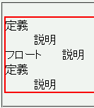
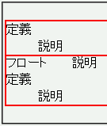

line-heightプロパティの値が大きいとき、フロートの上部に祖先要素の上ボーダーが表示されてしまう。
<dl style="border: 2px solid red; line-height:1.3;"> <dt>定義</dt> <dd>説明</dd> <dt style="border-width:0; float:left; width:5em;">フロート</dt> <dd>説明</dd> <dt>定義</dt> <dd>説明</dd> </dl>
2番目のdt要素をフロートにしています。このdt要素にボーダーは設置していません。
Netscape7.1標準モード
WinIE6.0標準モード
親要素または祖先要素に背景を指定することでこの不具合を回避することができます（transparent値は不可）。
<dl style="border: 2px solid red; background-color:white; line-height:1.3;"> <dt>定義</dt> <dd>説明</dd> <dt style="border-width:0; float:left; width:5em;">フロート</dt> <dd>説明</dd> <dt>定義</dt> <dd>説明</dd> </dl>
WinIE6.0の標準モードと互換モードで不具合の発生を確認しました。